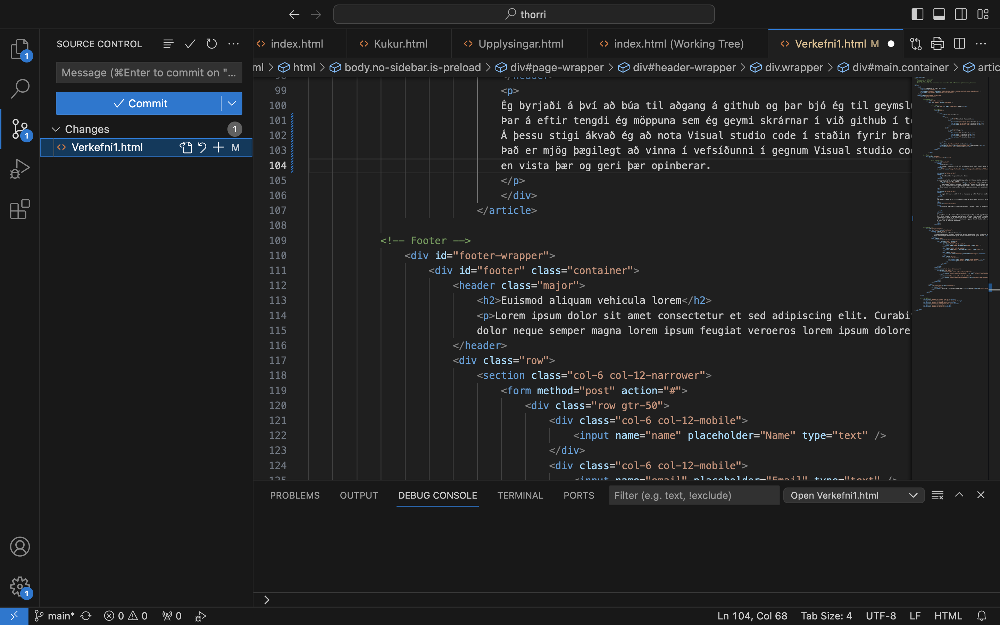
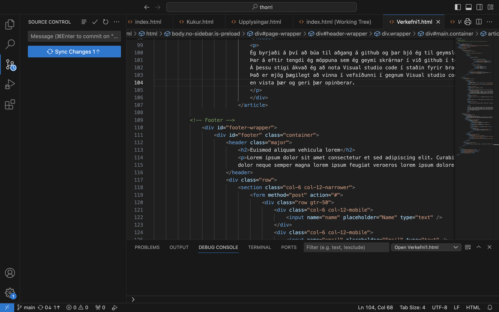

Verkefni 1
Lýsing á verkefni - Búðu til vefsíðu sem hýsir þitt vinnuframlag (portfolio).

Ákvörðunatökur á uppsetning á síðunni:
Í þessu verkefni byrjaði ég að hlaða niður forriti sem heitir brackets sem er góður ritill til að skrifa html. Þar á eftir fór ég á síðuna https://html5up.net/ og skoðaði nokkrar tillögur á sniðmáti á heimasíðu. Ég prófaði nokkur sniðmát en fannst þessi þægilegust miðað við verkefnið. Ég vildi hafa síðuna þægilega og hnitmiðaða. Efst á síðunni má sjá flokkana Verkefni, Ferilskrá, Heim, Upplýsingar og Sveppaleikur. Ef músinni er stokið yfir flipann verkefni koma upp öll verkefni sem hafa verið unnin. Allar myndir sem voru notaðar þurftu enga myndvinnslu þar sem myndirnar voru ekki í stórri upplausn.
Segðu frá hvað þú vilt fá út úr áfanganum og veltu fyrir þér hvað þú myndir vilja gera sem lokaverkefni.
Það sem mig langar að fá út úr þessum áfanga er að fá gott yfirlit á tölvustuddri framleiðslu og hagnýtingu á allskonar græjum sem gera manni kleift að koma hugmyndum í tilþreifalegan hlut. Það sem mig langar að gera sem lokaverkefni í þessum áfanger er standur til að geyma vínyl plötur.
Útskýrðu hvernig þú hlóðst upp síðunni á Github, hvort þú notaðir git bash eða aðra aðferð. Segðu frá þeim áskorunum sem þurfti að takast á við og hvernig var leyst úr þeim. Settu hlekk inná github repositoryið inná vefsíðuna sjálfa.
Ég byrjaði á því að búa til aðgang á github og þar bjó ég til geymslu fyrir allar html skrárnar. Þar á eftir tengdi ég möppuna sem ég geymi skrárnar í við github í terminal. Á þessu stigi ákvað ég að nota Visual studio code í staðin fyrir brackets þar sem ég hef unnið í því áður. Það er mjög þægilegt að vinna í vefsíðunni í gegnum Visual studio code. Þar get ég gert breytingar og svo staðfest þær áður en vista þær og geri þær opinberar.
Skref 1
Þegar ég geri breytingar í skránnum þá get ég séð eftir á hvað ég gerði og vistað þær. Hægt er að skrifa comment um breytingarnar ef ég myndi vilja fara aftur á þennan stað í verkefninu. 
Skref 2
Þegar ég hef staðfest breytingarnar íti ég á takkann Synk changes og þar með hef ég hlaðið því upp á netið.  Hér er linkur af repositoryinu https://html5up.net/